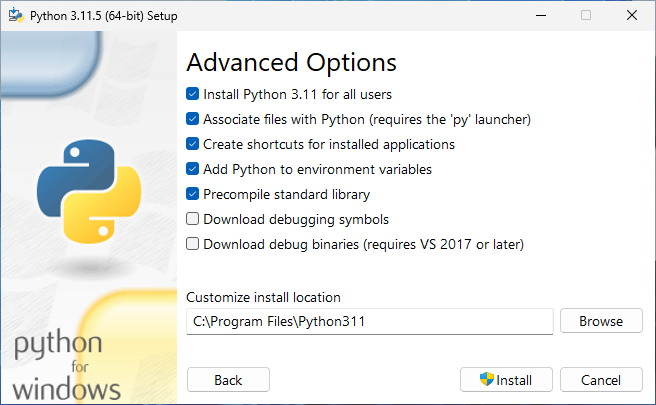

Instalar Python en tu computador es el primer paso para aprender el lenguaje. Si usas Windows 10 o superior, aquí encontrarás los pasos necesarios para hacerlo.
En esta guía, emplearás el instalador oficial para Windows que puedes descargar desde Python.org. También conocerás como Instalar Python desde la tienda de aplicaciones Microsoft Store. Esta última opción es la recomendada por Microsoft, aunque el instalador oficial funciona perfectamente.
Para seguir esta guía de instalación de Python, es recomendable que tengas experiencia de trabajo en Windows. Es también importante que tengas experiencia de trabajo con la terminal del sistema, PowerShell.
Prerequisitos
Para completar los pasos de esta guía de instalación de Python en Windows, necesitas una computadora con Windows 10 o superior y conexión a Internet. Además, puedes requerir privilegios administrativos en dependencia del tipo de instalación que decidas hacer.
Lo demás es seguír las instrucciones debajo, las cuales te guiarán en la instalación tanto usando el instalador oficial como el que está disponible en la tienda de aplicaciones de Microsoft.
Instalar Python en Windows usando el instalador oficial
En general, la manera recomendada para instalar Python en una computadora con Windows es emplear el instalador oficial que provee la Python Sofware Foundation (PSF) en el sitio web del lenguaje, Python.org. Los pasos para completar la instalación son los siguientes:
- Descargar el instalador de Python para Windows dede la página de descargas.
- Ejecutar el instalador y seguir las instrucciones en pantalla.
- Verificar que la instalación se completó con éxito.
- 🐍
A continuación encontrarás una explicación detallada de estos pasos. Presta especial atención al paso número dos, pues de él depende el éxito de la instalación.
Paso 1: Descargar el instalador de Python para Windows
El primer paso para instalar Python en Windows es descargar el instalador desde la página oficial de descargas de Python.org:
Una vez en esta página, selecciona la opción Downloads. Generalmente, cuando seleccionas esta opción, el sitio reconoce tu sistema operativo actual y te lleva directamente a la página de descargas correspondiente.
Deberás ver la siguiente página en tu pantalla:

Una vez en la página de descargas, es recomendable que descargues la versión más reciente de Python que aparecerá como la primera opción. De esta manera, tendrás acceso a las últimas novedades del lenguaje y estarás al día con las correcciones de errores y los parches de seguridad.
Luego de estas consideraciones, has click en la versión de tu preferencia para comenzar la descarga del instalador de Python. Concluida la descarga, estás listo para el próximo paso.
Paso 2: Ejecutar el instalador de Python
Ejecuta el instalador de Python, ya sea desde tu carpeta de descargas o desde tu navegador de Internet. Al ejecutar el programa, aparecerá la ventana siguiente en tu pantalla:

Es la ventana inicial del instalador de Python. Sí, está en inglés, pero no hay de qué preocuparse. Tómalo como una práctica necesaria. Además, es probable que en tu ordenador te aparezca en español.
En esta pantalla, inicia el instalador de Python 3.11.5 (64-bit) para Windows. Hay algo importante que debes hacer ahora y es seleccionar la opción Add python.exe to PATH:

Con esto, el instalador añadirá el ejecutable de Python al path (ruta) del sistema operativo. Así, podrás ejecutar el comando python directamente desde la terminal PowerShell y Windows sabrá donde encontrar el ejecutable.
Una vez hecha la selección, tienes dos opciones. Puedes hacer click en:
- Install Now (Instalar Ahora) para comenzar la instalación standard de Python
- Customize installation (Personalizar instalación) para personalizar la instalación con opciones adicionales
En esta guía, seleccionarás la segunda opción, la cual te lleva a la segunda ventana del instalador, Optional Fatures (Características Opcionales), que luce así:

En esta ventana, todas las opciones están seleccionadas por defecto, lo cual es recomendable. Sin embargo, si no tienes pensado emplear IDLE en tu proceso de aprendizaje y desarrollo, entonces puedes desmarcar esta opción. El resto de las opciones deberías mantenerlas seleccionadas para evitar futuros problemas.
Una vez que hayas decidido las característica opcionales que deseas, puedes hacer click en el botón Next (Siguiente) para continuar. Te aparacerá la ventana siguiente:
En esta ventana, tienes unas cuantas opciones avanzadas:
-
Install for all users (Instalar para todos los usuarios): Recomendada si no eres el único usuario que usará Python en esta computadora. Requiere privilegios administrativos.
-
Associate files with Python (Asociar archivos con Python): Recomendada porque esta opción asocia los archivos Python con el lanzador y el editor de código.
-
Create shortcuts for installed applications (Crear accesos directos para las aplicaciones instaladas): Recommendada, pues crea accesos directos que te permitirán acceder a Python y sus aplicaciones de forma rápida.
-
Add Python to environment variables (Añadir Python a las variables de entorno): Recomendada poque habilita la ejecución directa de Python.
-
Precompile standard library (Precompilar la biblioteca estándard): No requerida. Esta opción precompila los archivos Python de la biblioteca estándard, lo cual puede demorar la instalación.
-
Download debugging symbols and Download debug binaries: Recomendadas cuando planeas crear extensiones en C o C++.
Para seguir esta guía, deberás seleccionar la primera opción:

Notarás que la opción de precompilar la instalación se selecciona automáticamente. Este comportamiento tiene el fin de optimizar el funcionamiento de Python cuando lo instalas para varios usuarios y estos pueden no tener acceso de escritura en el directorio destino, el cual también cambia automáticamente.
Luego, has click en el botón Install (Instalar) para comenzar la instalación de Python. Verás la siguiente ventana en tu pantalla:

La instalación no debe tomar mucho tiempo. En cualquier caso, puedes recostarte y relajarte mientra el instalador hace su trabajo. Una vez concluido el proceso, aprarecerá la ventana de instalación exitosa:
Esta ventana es la confirmación de que ha concluido la instalación de Python en tu sistema operativo Windows. Es recomendable que visites el link a la página sobre cómo usar Python en Windows. Allí encontrás información valiosa que puede servirte de mucho.
Paso 3: Verificar la instalación de Python
Una vez que hayas ejecutado los pasos anteriores, Python estará instalado en tu sistema operativo. Para confirmar que lo tienes, abre una ventana de PowerShell y ejecuta el comando siguiente:
PS> python --version
Python 3.11.5
Este comando imprime la versión de Python que tienes instalada por defecto. Con esto has concluido la instalación de Python usando el instalador oficial para Windows. Ahora estás listo para escribit tu primer programa.
Instalar Python desde Microsoft Store
Para los usuarios que comienzan con Python en un sistema operativo Windows, Microsoft recomienda instalar la aplicación desde su tienda de aplicaciones. Si prefieres instalar Python de esta forma, entonces puedes seguir los pasos siguientes:
- Ve al menú Inicio y escribe
Microsoft Store. - Haz click en el enlace para abrir la tienda.
- Selecciona la barra de Búsqueda y escribe
Python. - Selecciona qué versión de Python que te gustaría usar. Nuevamente, deberías usar la versión más reciente para que tengas disponibles las nuevas características del lenguaje.
- Has click en el Obtener (Get) para descargar e instalar la versión seleccionada.
Una vez ejecutados esto pasos, deberás tener Python instalado en tu sistema operativo. Nuevamente, para confirmar que la instalación fue exitosa, abre tu PowerShell y ejecutal el comando siguiente:
PS> Python --version
El instalador de Python disponible en la tienda de aplicaciones Microsoft Store también incluye pip, el gestor de paquetes por defecto de Python. Puedes confirmar que pip también está instalado ejecutando pip --version en tu sesión de PowerShell.
Resumiendo
Instalar Python en tu ordenador es el primer paso en tu empeño de aprender a programar con el lenguaje. Nuevamente, recuerda que los pasos a seguir para completar la instalación con el instalador oficial para Windows son los siguientes:
- Descargar el instalador de Python para Windows dede la página de descargas.
- Ejecutar el instalador y seguir las instrucciones en pantalla.
- Verificar que la instalación se completó con éxito.
- 🐍
Luego de completados estos pasos, estás listo para comenzar a explorar las bondades de Python como lenguaje de programación.